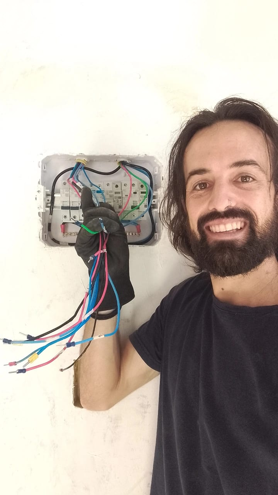

🔧❄️⚡ O que posso fazer por você?
Serviços técnicos com precisão de artista
Seja para sua casa, seu comércio ou sua indústria, ofereço soluções completas em climatização, refrigeração e elétrica. O mesmo cuidado que tenho com meus instrumentos musicais e malabares, aplico em cada reparo e instalação.
❄️ CLIMATIZAÇÃO
Ar puro, temperatura ideal, bem-estar garantido.
- Instalação de ar-condicionado (split, janela, cassete, multi-split)
- Manutenção preventiva e corretiva
- Limpeza e higienização de aparelhos
- Carga de gás e diagnóstico de vazamentos
- Projetos para ambientes residenciais, comerciais e industriais
- Orientação na escolha do equipamento ideal para cada espaço
🧊 REFRIGERAÇÃO

Preservação e eficiência para seus alimentos e insumos.
- Manutenção de refrigeradores, freezers e câmaras frias
- Instalação de sistemas de refrigeração comercial
- Diagnóstico e reparo de sistemas de refrigeração
- Controle de temperatura e eficiência energética
- Atendimento para bares, restaurantes, mercados e indústrias
⚡ ELÉTRICA EM GERAL

Segurança e respeito às normas técnicas.
- Diagnóstico e reparo de instalações elétricas
- Troca de componentes (disjuntores, tomadas, fiações)
- Projetos elétricos básicos
- Prevenção de curtos-circuitos e sobrecargas
- Atendimento residencial e comercial
🌟 Por que me chamar?
Não sou apenas um técnico — sou um parceiro que entende do seu lado.
- Olhar artístico: enxergo soluções criativas onde outros só veem problemas
- Transparência total: explico cada passo antes de executar
- Ferramentas modernas: equipamentos de qualidade para diagnósticos precisos
- Compromisso com prazos: seu tempo é sagrado
- Atendimento personalizado: cada cliente é único, cada solução também
- Formação constante: sempre atualizado com as melhores práticas do mercado
🔍 Como funciona meu atendimento:
- Contato: Você me chama e conta sua necessidade
- Visita técnica: Vou até o local, avalio e explico tudo
- Orçamento claro: Sem letras miúdas, sem surpresas
- Execução: Mão na massa com capricho e cuidado
- Garantia: Serviço bem-feito é serviço que dura
📍 Área de atendimento: Atendo em toda Palmas-TO e região. Consulte disponibilidade para outras localidades.
📬 Pronto para resolver isso? Entre em contato e agende uma visita. Vou ficar feliz em ajudar!
👉 Solicitar orçamento"Precisão técnica com coração de artista — seu problema vira solução."